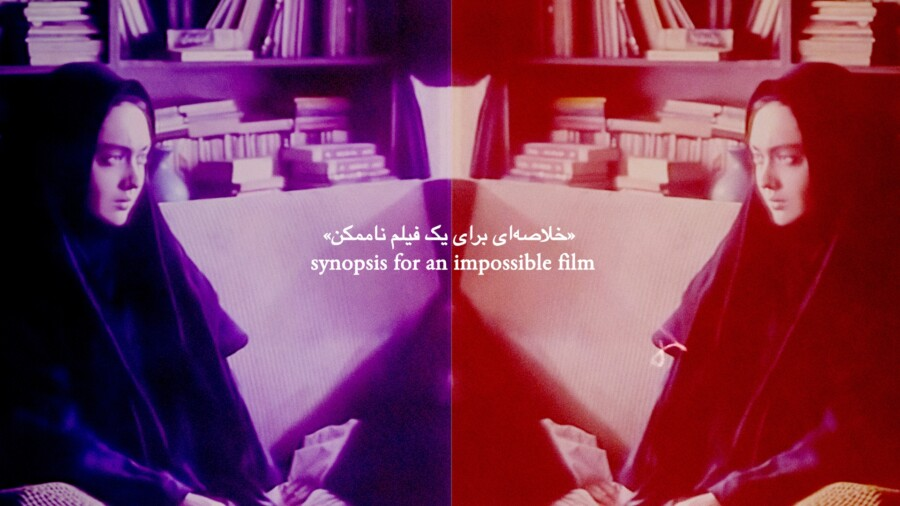

Conversations at the Edge | An Evening with Maryam Tafakory
In her first Chicago appearance, Jarman Award–winning Iranian artist Maryam Tafakory presents a selection of her striking films alongside a new live film performance reflecting on resistance, erasure, and desire.
Working with imagery from post-revolutionary Iranian cinema, archival materials, and autobiographical fragments, Tafakory creates layered, sensorial works that surface traces of women’s and queer lives, intimacies, and activism suppressed by the Islamic Republic, while unsettling reductive Western understandings of Iranian life and history.
Followed by a conversation with the artist and audience Q&A. Presented with support from the Walker Art Center.
Followed by a conversation with Maryam Tafakory and audience Q&A. Presented with support from the Walker Art Center.
ABOUT THE ARTIST
Maryam Tafakory (born and raised in Iran) works with film and performance, bringing together poetry, speculative nonfiction, and archival material to examine veiled acts of erasure—of bodies, intimacies, and histories. She is the 2024 recipient of the Film London Jarman Award. Her work has been presented in solo screenings and exhibitions at the Museum of Modern Art (New York), the Barbican Centre (London), BOZAR (Brussels), the National Gallery of Art (Washington, D.C.), and the Academy Museum of Motion Pictures (Los Angeles) and has screened at major international festivals including the New York Film Festival, Toronto International Film Festival, BFI London Film Festival, and Cannes Directors’ Fortnight. Tafakory’s films have received numerous awards (several Oscar-qualifying) including the Gold Hugo at the 58th Chicago International Film Festival, Best Documentary Short at the 72nd Melbourne International Film Festival, the Tiger Short Award at the 51st International Film Festival Rotterdam, and the Cinema & Gioventù Award at the 77th Locarno Film Festival. She was the 2019 Flaherty/Colgate Distinguished Global Filmmaker in Residence, a MacDowell Fellow in 2023, and an Institute for Ideas and Imagination Fellow in 2025. She teaches in the Master of Fine Art program at the Ruskin School of Art, University of Oxford, and holds a PhD from Kingston University, London. She is currently developing her debut feature film, Hospital of Irremediable Desires, drawing on ongoing research into illicit desires, queer disappearances, and women’s involvement in Iran’s clandestine revolutionary movements of the 1970s.
CONVERSATIONS AT THE EDGE
Conversations at the Edge (CATE) is the School of the Art Institute of Chicago’s award-winning series for groundbreaking film and media art. Now in its 25th year, CATE is presented through a unique partnership between SAIC’s Department of Film, Video, New Media, and Animation; Video Data Bank; and the Siskel Film Center.